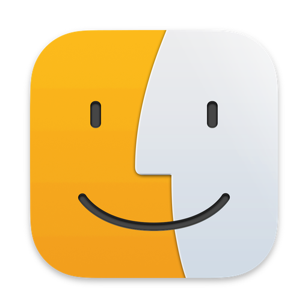

Semantisch suchen
Design-Philosophie
1:1 Finder + Ontologie
PinkerFinder ist vom Autor signiert, aber nicht von Apple notarisiert. Beim ersten Start sagt macOS deshalb „… kann nicht überprüft werden" — das ist kein Fehler, so geht es weiter:
Das ist einmalig. Danach startet die App wie jede andere.
DMG jetzt herunterladen